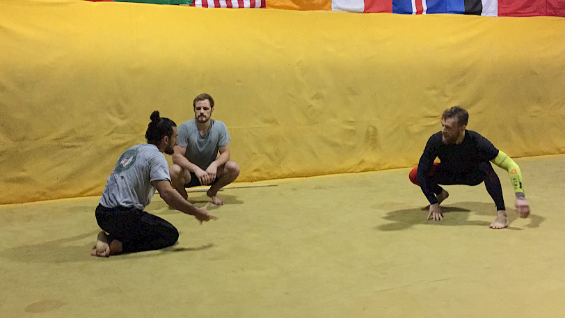
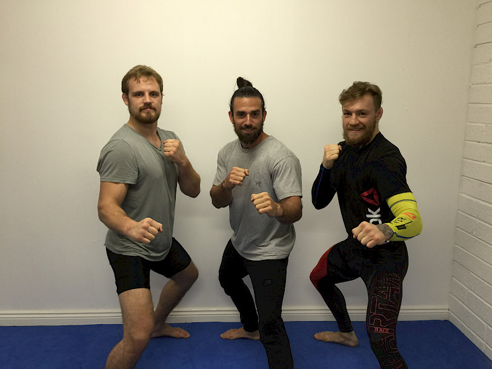

Recently i've had the pleasure and honor to work and teach UFC fighters Conor McGregor and Gunnar Nelson in preparation for their upcoming fights in Vegas on December 12th.
What a great experience...

These guys are into movement, I tell ya. It's a 24/7 obsession - it's the main subject in conversations, dinners, drives and of course on the mat. We were geeking out on it totally.
We hit it off right away- I took them through a few good hours of movement drills, body prep, tactical games, locomotion and some beginner corset protocols. Their bodies are quick to adapt, react and crave the challenge. Their mind is strong in development and desire.
Many who are only exposed to the UFC fighters from the media would be surprised to discover these men are honorable, respectful, filled with gratitude and walking the martial arts path and code. They are also showmen and confident but most confuse these different layers and cannot see beyond the entertainment.
Conor was repeatedly thanking me for sharing my knowledge, showered me with gifts, great meals and generosity. Very strong character, smart and powerful but also gentle, thoughtful and delicate.
Gunnar - obsessed with the animal kingdom, a passion we share and a very special mover and person. Gunnar does things 'his own way' and does them well.

I made it a point to expose these great fighters to a few subjects not often discussed within their field:
1. Softness
The importance of softening the body up again and again to combat the undesired side effects of their hard training.
Why?
What is allowed to harden will ultimately crack and break, the hardening nature of getting hit again and again will produce side effects such as slower reactions, movements and will make offensive action limited.
The Softening Protocols that I use are not 'stretching' or 'flexibility' mind you. They lead to incredible speed and effortless transmission of force inside your kinetic chains and body.
2. Playing ALSO outside of the technical box
Limiting one self to fighting and sparring other fighters with similar skill set and similar techniques will lead to stagnation in reaction ability ultimately.
It is of course the main practice and a required one to pass through and maintain but at a high level, there is a great potential in 'breaking the mold' and throwing one self into different environments.
I had Conor and Gunnar react to sticks, different scenarios and under different rules. They immediately assumed the 'Child Mind' and were able to re-pattern themselves to the new requirements.
This left them fresh and activated and I've received from them constantly comments on how sharp and loose they were feeling post practice.
3. Shaking
I took the guys through a shaking session to show them the potential relaxation, recovery and regeneration potential in it.
Shaking is done by most animals to remove stagnation, trauma and injury.
From cultural reasons we've stopped and blocked this practice and treat shaking and tremor as indicative of disease and illness.
Seeing their bodies respond to it was amazing. Fighters on this caliber are walking scar-tissued traumatized bodies essentially. Multiple conditions can arise from the amount of stress and injury present and their bodies calcify, fill with adhesions and harden in response to their life styles.
Shaking the way I teach it is an invaluable resource for every person and twice for the modern fighter, warrior, soldier.
Supporting Conor and Gunnar and teaching them some fresh angles on movement was simply... a great time, an honor and a pleasure.
I hold my fingers crossed for them in their upcoming fights, I have full confidence they will do very well.

Keep moving!